WorkSpacesカスタムイメージ作成・共有
仕様
構成・動作
| 項目 | 管理する内容 |
|---|---|
| カスタムイメージ | Windows、Cドライブ上のアプリケーション、OS設定 |
| カスタムバンドル | カスタムイメージ、コンピューティングタイプ、ルート／ユーザーボリューム |
| Directory ID／ユーザー | WorkSpaceの所属ディレクトリと利用者 |
| ADグループ | 環境ごとの展開対象ユーザー |
| GPO | 利用開始後も変更するセキュリティ・ユーザー設定 |
ADグループとカスタムバンドルはWorkSpaces標準機能で直接関連付けられません。環境ごとにADグループ、Directory IDおよびBundle IDの対応表を管理し、グループメンバーを抽出してユーザー単位でWorkSpaceを作成します。ADグループからユーザーを削除しても、WorkSpaceは自動削除されません。
管理範囲
参照WorkSpaceのOS・共通アプリケーションをイメージで管理し、利用開始後のポリシー変更はGPOで管理します。共有は必要なAWSアカウントに限定します。
制約事項
暗号化したWorkSpaceからカスタムイメージは作成できません。カスタムバンドルの容量は元イメージの容量以上が必要です。共有は同じリージョンのAWSアカウント間で行い、共有先はイメージをコピーしてから利用します。
構築作業
1. 参照WorkSpaceを準備する
- Amazon WorkSpaces作成・バンドル設定手順に従い、イメージ作成専用WorkSpaceを作成します。
- Windows Server 2022、DCV、PowerPro、ルート80GB／ユーザー50GBを指定します。
- ボリューム暗号化を選択していないことを確認します。
- 専用ユーザーを使用し、個人の業務データを保存しません。
- イメージ作成用端末にはお客様固有のGPO設定を適用せず、イメージ作成後の展開先で適用します。必要に応じて専用OUを使用し、AWS管理の既定GPOは変更しません。
- 承認済みWindows更新と共通アプリケーションを適用します。
- ライセンスが複製後の利用条件を満たすことを確認します。
- 個人ファイル、ダウンロード、一時ファイル、キャッシュ、ブラウザー履歴および認証情報を削除します。
- 不要なユーザープロファイルを削除し、対象プロファイルが10GiB未満となっていることを確認します。
- Cドライブに12GiBを超える空き容量があることを確認します。
- Windowsを再起動し、アプリケーション、ネットワークおよびDCV接続を確認します。
- WorkSpacesクライアントを切断します。
利用開始後も変更する設定はイメージへ固定せず、GPOで管理します。
2. Image Checkerを実行する
検査を実行する
- 参照WorkSpaceへ管理者権限で接続します。
- 管理者PowerShellでImage Checkerを起動します。
Start-Process 'C:\Program Files\Amazon\ImageChecker.exe' -Verb RunAsUACが表示された場合は発行元を確認して「はい」を選択します。
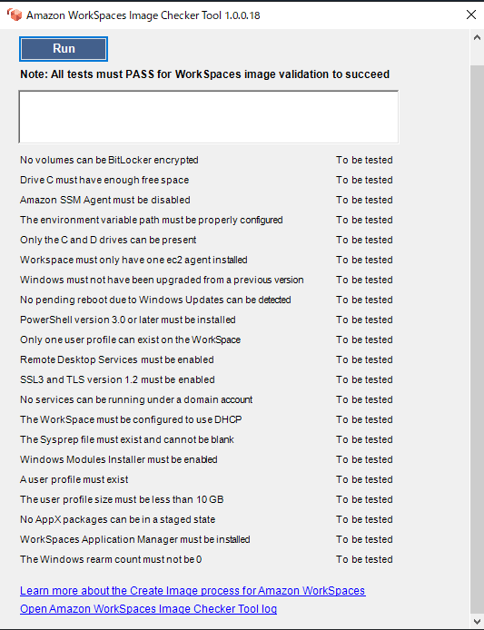
- 「Run」を選択します。
- 全項目が
PASSEDで、Validation successfulと表示されることを確認します。 - 警告またはエラーが残る場合は、イメージ作成へ進みません。
Staged AppX警告の解消
One or more AppX packages are in a staged stateと表示された場合は、図1の警告対象を確認します。
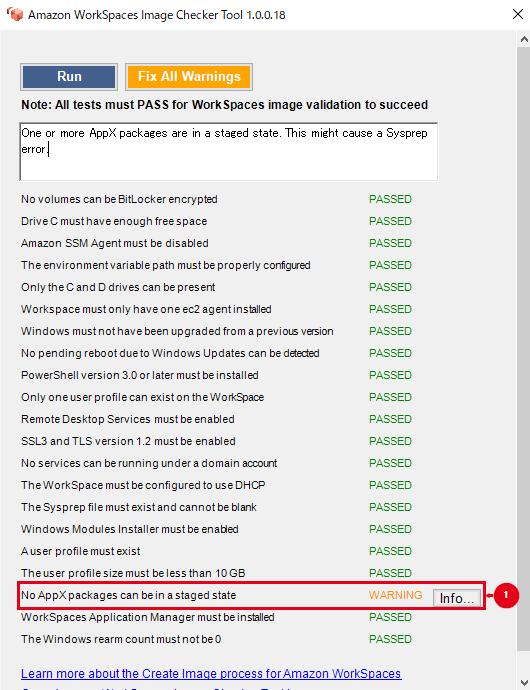
最初に管理者PowerShellでStagedのパッケージを特定し、結果を保存します。再登録の対象端末は、イメージ作成専用の参照WorkSpaceだけです。Stagedが1件以上あり、個別の対処後も同じ警告が残り、対象と影響を確認できた場合に限って、後述の再登録を実施します。対象が0件の場合は再登録せず、Image CheckerのInfoとログから別の原因を確認します。
$stagedPackages = Get-AppxPackage -AllUsers |
Where-Object { $_.PackageUserInformation -match 'Staged' }
$stagedPackages |
Select-Object Name, PackageFullName, PackageUserInformation個別の対処後も同じ警告が残り、再登録が必要な場合は、管理者PowerShellで、全ユーザーから列挙した、有効なAppXManifest.xmlを持つ既存AppXパッケージを再登録します。再登録対象はStagedと表示された1パッケージだけではなく、この条件を満たす既存AppXパッケージです。
$packagesToRegister = Get-AppxPackage -AllUsers |
Where-Object {
$_.InstallLocation -and
(Test-Path (Join-Path $_.InstallLocation 'AppXManifest.xml'))
}
$packagesToRegister | ForEach-Object {
Add-AppxPackage -DisableDevelopmentMode -Register (Join-Path $_.InstallLocation 'AppXManifest.xml') -ErrorAction Stop
}
$remainingStagedPackages = Get-AppxPackage -AllUsers |
Where-Object { $_.PackageUserInformation -match 'Staged' } |
Select-Object Name, PackageFullName, PackageUserInformation
$remainingStagedPackages⚠️ 注意：AppX再登録は参照WorkSpaceだけで実施する
このコマンドは全ユーザーからパッケージを列挙し、実行ユーザーのコンテキストで再登録します。全ユーザーへ一括でインストールする処理とは異なります。業務利用中のWorkSpaceへ一律実行せず、イメージ作成専用の参照WorkSpaceで、実行前のStaged一覧とインストール済みアプリを記録してから1回だけ実行します。$remainingStagedPackagesの出力がなく、業務アプリとスタートメニューが正常で、Image Checkerを再実行して全項目がPASSEDになった場合だけイメージ作成へ進みます。AppX再登録でエラーが発生する、Stagedが残る、アプリが起動しない、またはImage Checkerの警告が残る場合はイメージ作成を中止します。パッケージを推測で削除せず、変更前の健全なスナップショットからの復元、または参照WorkSpaceの再構築を選択します。
再登録の動作はAdd-AppxPackageを参照してください。警告に応じた個別対処を優先し、アプリケーションの削除は対象と影響を確認してから実施します。
図2で全項目がPASSED、図3でValidation successfulを確認します。
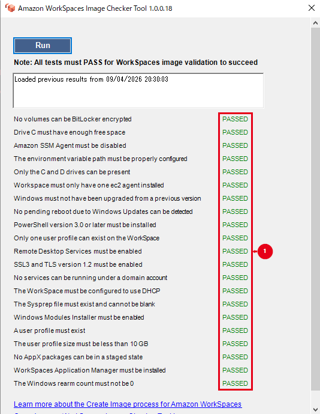
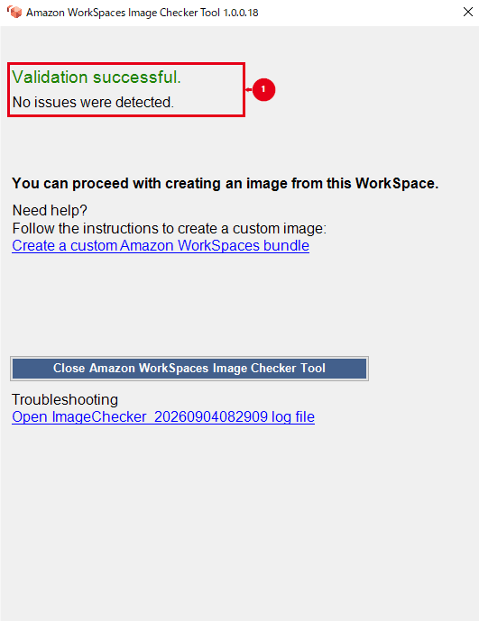
❌ エラー：Image Checkerが合格しない場合
イメージ作成を開始せず、Infoとログファイルで対象項目を確認します。修正後に再実行し、全項目の合格とValidation successfulを確認してから進みます。
3. カスタムイメージを作成する
作成要件と最新の制約はカスタムWorkSpacesイメージとバンドルを作成するを参照してください。
ℹ️ 情報：イメージ作成時のWorkSpace状態
作成元WorkSpaceが「利用可能（Available）」、変更状態が「なし（None）」となっていることを確認します。AutoStopで停止中の場合は起動して利用可能になるまで待ちます。利用者のログインは不要ですが、作成中は使用できないため、クライアントを切断してから実行します。
Amazon WorkSpacesコンソールで作成元WorkSpaceを選択します。
WorkSpace ID、状態、変更状態、暗号化および作成元バンドルを確認します。
「アクション」から「イメージの作成」を選択します。
イメージ名へ
WindowsServer2022-Japanese-DCVを入力します。説明へ設定値に記載した文字列を入力します。
作成元バンドル、OS、言語、TPM、プロトコルおよび主要アプリケーションを照合します。
「イメージの作成」を選択します。
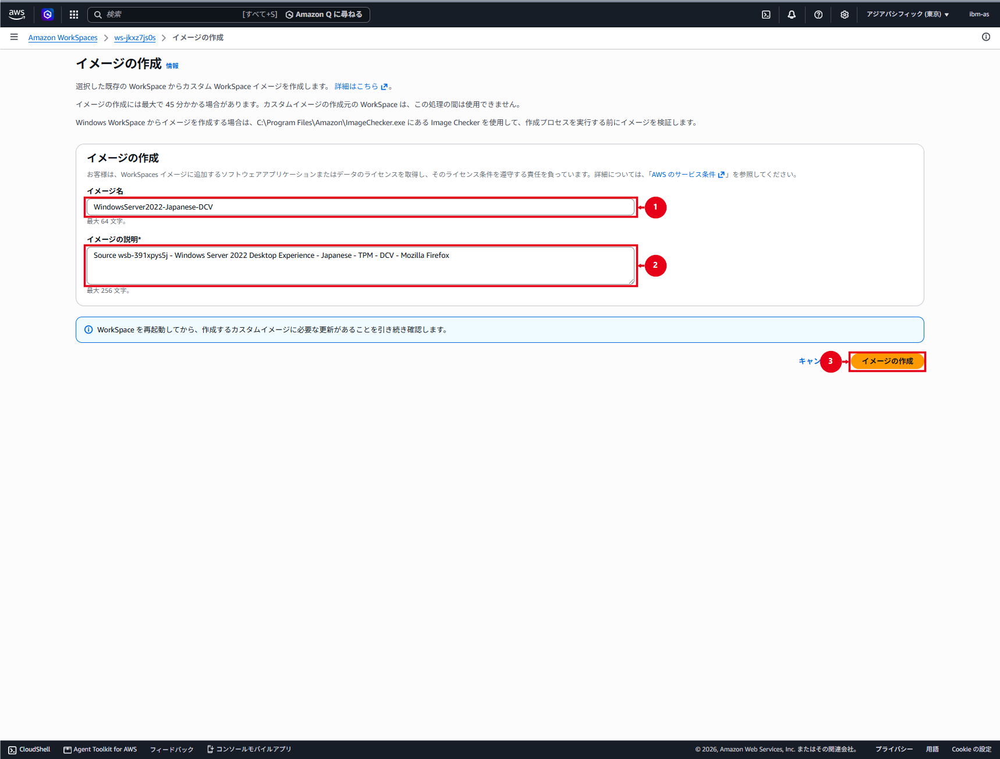
- 「イメージ」を開き、対象イメージが「利用可能」になるまで待ちます。
- イメージ名、イメージID、OS、プロトコルおよび所有者を確認します。
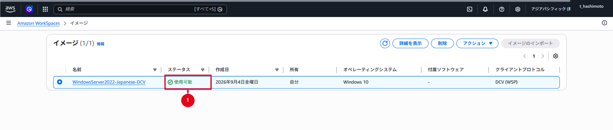
4. カスタムバンドルを作成する
- 「イメージ」で作成したカスタムイメージを選択します。
- 「アクション」から「バンドルの作成」を選択します。
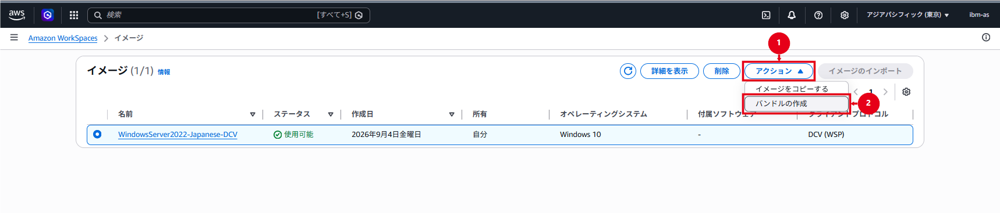
- バンドル名へ
WindowsServer2022-Japanese-DCV-PowerProを入力します。 - コンピューティングタイプにPowerProを指定し、元イメージ以上の容量を選択します。設計値が80GB／50GBの場合は、その容量で利用できるイメージを使用します。
- 「バンドルの作成」を選択します。
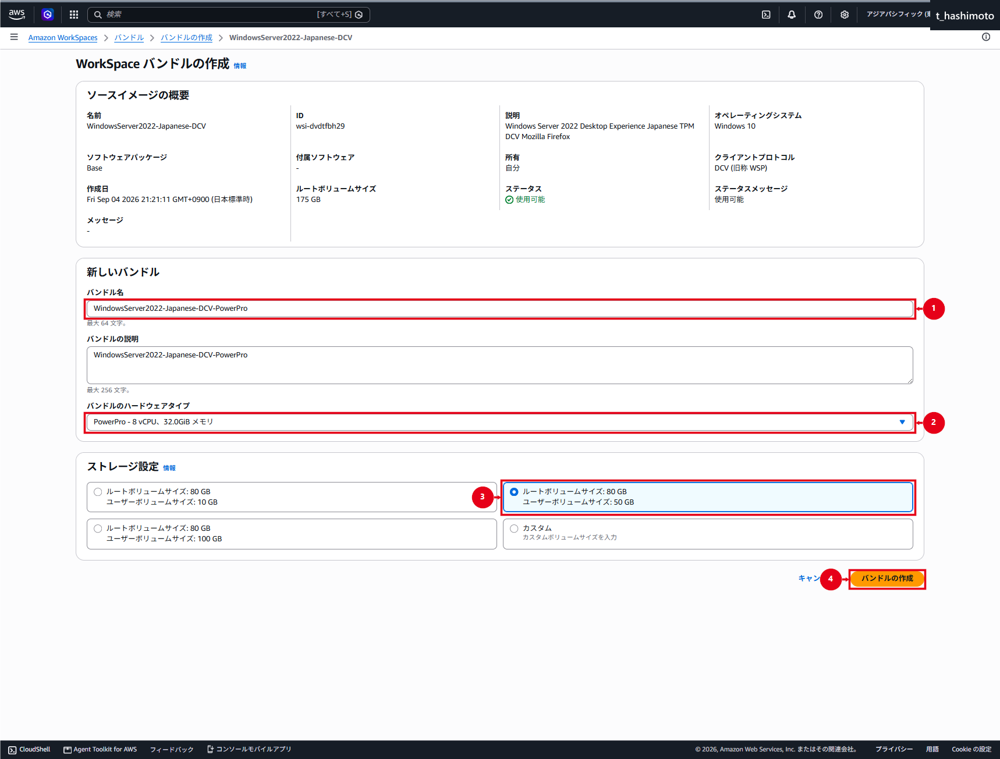
- 「バンドル」で状態が「利用可能」になるまで待ちます。
- バンドルID、元イメージID、PowerPro、承認済みのルート／ユーザー容量およびDCVを確認します。
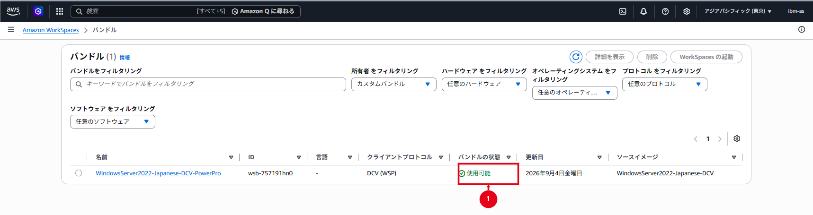
⚠️ 注意：ソースイメージとバンドルの容量を確認
図7には、ソースイメージのルート容量175GBと、入力欄の80GB／50GBが表示されています。作成後の容量は図8の一覧に表示されていないため、バンドル詳細または次のCLIで確認します。元イメージの容量を下回るバンドルは作成できません。80GBが必要な場合は、80GBの参照WorkSpaceからイメージを作成します。
AWS CLIで確認する場合は、実際のBundle IDを指定します。
$bundleId = '<作成したBundle ID>'
aws workspaces describe-workspace-bundles --bundle-ids $bundleId --region ap-northeast-1 --query "Bundles[0].{State:State,ImageId:ImageId,Compute:ComputeType.Name,RootGiB:RootStorage.Capacity,UserGiB:UserStorage.Capacity}" --output table --no-cli-pagerState=AVAILABLE、元イメージID、Compute=POWERPRO、ルート／ユーザー容量が承認済み設計と一致しないバンドルは展開に使用しません。
5. カスタムバンドルを検証する
- WorkSpaces作成画面で「手動で設定」、「WorkSpacesバンドルを使用」の順に選択します。
- 作成したカスタムバンドル名とBundle IDを指定して、検証用WorkSpaceを1台作成します。
AVAILABLEになるまで待ち、クライアントから接続します。- OS、DCV、PowerPro、承認済みのルート／ユーザー容量および共通アプリケーションを確認します。
- コンピューターオブジェクトが対象OUにあることを確認します。
gpupdate /forceとgpresult /scope computer /rで意図したGPOを確認します。- 業務通信、再起動、サインアウトおよび再サインインを確認します。
- 検証結果が承認されるまで、本番で使用するBundle IDを切り替えません。
「既存のWorkSpaceからコピー」は既存機の設定を複製する経路です。新しいカスタムバンドルを選択した確認には使用しません。
運用作業
1. イメージとバンドルを更新する
既存イメージを直接編集せず、現行バンドルから更新作業用WorkSpaceを作成して、OS・アプリケーション・設定を変更します。Image Checkerに合格した新しい版のイメージから、新しい版のバンドルを作成します。検証後に環境別のBundle IDを切り替え、旧イメージと旧バンドルは承認済みの保管期限まで残します。
既存バンドルの元イメージを更新しても、作成済みWorkSpaceのOSやアプリケーションは自動更新されません。再構築または再作成は、データ、スナップショットおよび利用者影響を確認した別作業として実施します。
2. ADグループで展開対象を管理する
- 環境ごとにADグループ、Directory IDおよび検証済みBundle IDの対応表を承認します。
- グループメンバーから、無効ユーザー、サービスアカウントおよび既存WorkSpace利用者を除外します。
- 同一ディレクトリ内でユーザーが重複していないことを確認します。
- 対象人数、WorkSpacesクォータおよびサブネットの空きIPを確認します。
- 各環境で1名の検証ユーザーを先行作成し、承認後に残りを展開します。
グループ追加だけではWorkSpaceは自動作成されません。一括作成する場合は、承認済みスクリプトまたは自動化でユーザーごとに作成要求を発行します。
3. 他AWSアカウントへ共有する（必要な場合）
カスタムバンドルは共有できません。カスタムイメージの共有と共有解除はカスタムイメージを共有または共有解除する、共有先でのコピーはカスタムイメージをコピーするを参照してください。
共有元AWSアカウント
- 共有元で対象リージョンの「イメージ」を開きます。
- イメージ名、イメージID、状態、OSおよびプロトコルを作業申請と照合します。
- 「共有アカウント」で「アカウントを追加」を選択します。
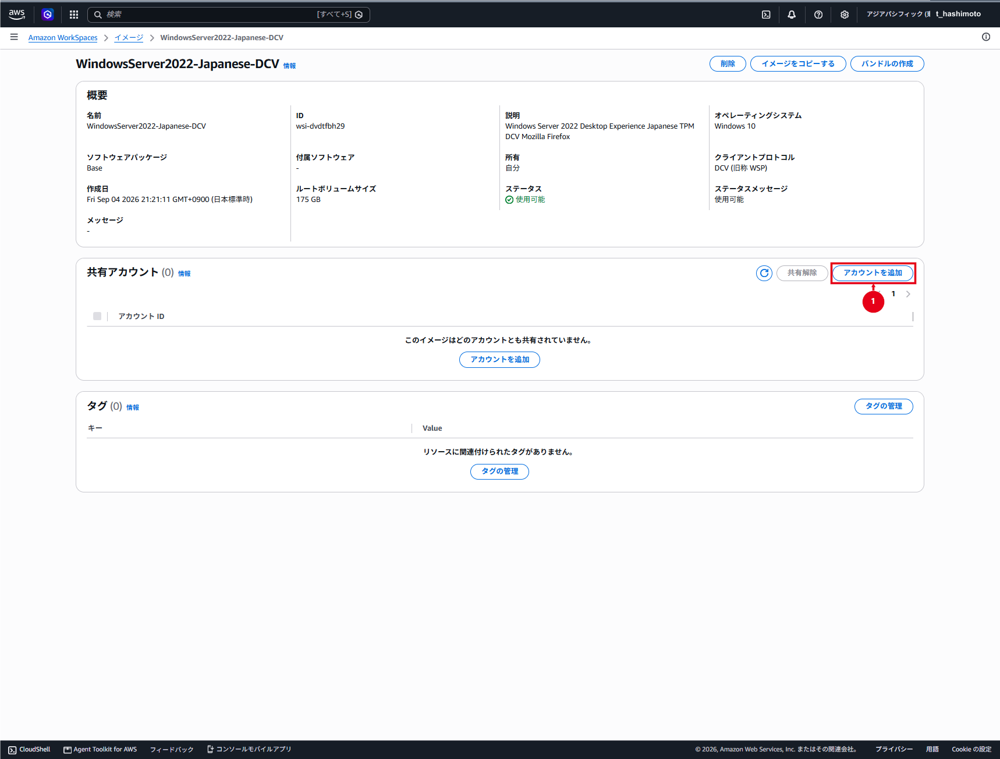
- 共有先の12桁AWSアカウントIDを入力します。
- 作業申請と再照合し、「イメージの共有」を選択します。
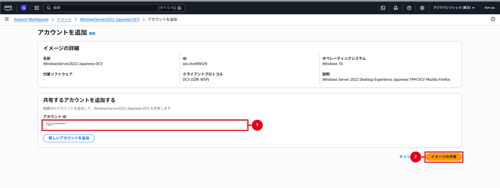
- 成功メッセージと共有アカウント一覧を確認します。

図10～13のAWSアカウントIDは、先頭4桁だけを残し、残り8桁を*でマスクした画像を使用します。実作業では12桁の値を作業申請と照合します。
共有先AWSアカウント
- 共有元と同じリージョンで、共有されたイメージを表示します。
- 共有元AWSアカウント、イメージ名およびイメージIDを照合します。
- 「イメージのコピー」を選択し、共有先で使用する名前と説明を入力します。
- コピーが「利用可能」になるまで待ち、共有先で新しいイメージIDが発行されたことを確認します。
- 共有先のコピーからPowerProと承認済み容量のカスタムバンドルを作成します。
- 検証用WorkSpaceを1台作成し、カスタムバンドルの検証項目を実施します。
共有先で作成したコピーは、共有元が共有を解除しても残ります。新たな共有先へ展開する場合は、元の所有アカウントで共有を設定します。
ℹ️ 情報：共有先での作業記録
本書の画像は共有元の操作例です。共有先でのコピー完了、新しいイメージID、バンドル作成とWorkSpace接続の結果を別途確認します。
4. 共有を解除する（必要な場合）
- 共有先でコピー処理が進行中でないことを確認します。
- 共有元の対象イメージで、共有解除するAWSアカウントを選択します。
- AWSアカウントIDを照合し、「共有解除」を選択します。
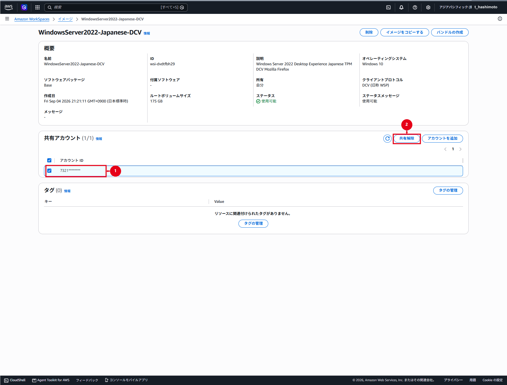
- 確認ダイアログのイメージ名とAWSアカウントIDを再確認し、「共有解除」を選択します。
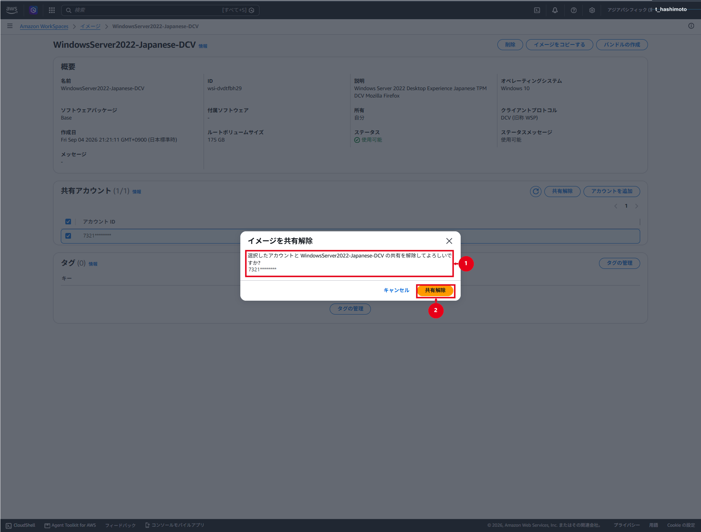
- 成功通知、または共有アカウント一覧から対象が消えたことを確認します。
共有解除前に共有先がコピーしたイメージは残るため、削除が必要な場合は共有先で処理します。
5. 切り戻しと削除を行う
新しいイメージまたはバンドルに問題がある場合は展開を停止し、環境別対応表を直前の検証済みBundle IDへ戻します。問題のバンドルから作成したWorkSpaceを特定し、データと利用者影響を確認して再構築または再作成します。切り戻し完了まで旧イメージと旧バンドルを削除しません。
カスタムイメージまたはバンドルを削除する場合は、カスタムバンドルとイメージを削除するに従い、依存するWorkSpace、バンドル、共有先およびコピー処理がないことを確認します。